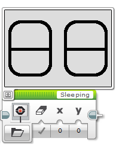
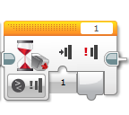
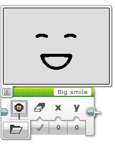
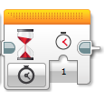
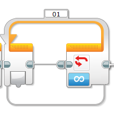

Display a sleepy face.
Have the program wait until the bump sensor is pressed. 
Once the bump sensor is pressed, display a happy face on the screen.
for 1 second and then exit.
Modify the program using a loop to replay the program again infinitely
Modify the program so that holding down the bump sensor will display and keep a happy face on the screen, Releasing the button displays the sleeping face.
This is the version of the program that I want you to show me.